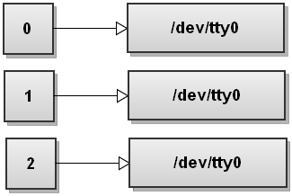
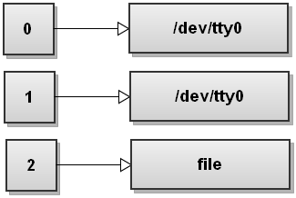

Bash
Group commands without subshell with '{}'
Following command does not do the result one might expect. Regardless of the exit
status of the cd /tmp, exit command will always be run.
cd /tmp || echo "cd to /tmp failed"; exit
# Exits anyways even if cd was succesful
Use { cmds } to group a list of commands that will be executed in the current
shell. At the other hand, ( cmds ) will execute the cmds in a subshell.
Don't forget the ;
$ bash
$ cd /tmp || { echo "cd to /tmp failed"; exit }
>
>
>
> ^C
$
When using command grouping with curly braces '{', always end the list of commands inside the curly braces with a semicolon and a space ';<space>' like this:
$ cd /tmp || { echo "cd to /tmp failed"; exit; }
References
- Bash idioms, 2022
Output redirection
When bash starts it opens three file descriptors:
- stdin -> File descriptor(fd) 0
- stdout -> fd 1
- stderr -> fd 2
Assuming your terminal is /dev/tty0, here is how the file descriptor table
looks like when bash starts:

You can also open, close and copy file descriptors. And you can also write to them and read from them.
Redirect the standard output of a command to a file
command >file
Operator > is the output redirection operator. Bash first tries to open the
file for writing and if it succeeds it sends the stdout of command to the newly
opened file. If it fails opening the file, the whole command fails.
When you write the command above, bash opens the file and and replaces the fd
1 with the fd that points to the file. The result is that all the standard
output gets redirected, or in anoter words, ends up being written to file

Redirect the standard error of a command to a file
command 2> file
Here bash redirects stderr to file:

Bash opens file for writing, replaces fd 2 with th fd of file.
Effectively, anything written to the stderr gets redirected to the file.
Redirect both standard output and standard error to a file
command &>file
&> operator redirects both stdout and sterr of the command to file.
This is bash's shortcut for quickly redirecting both streams to the same
destination.
Here is how the file descriptor table looks like after bash has redirected both
streams:

Here we're trying to check if we've installed trash-cli package. And set
variable if so.
If we don't have the binary trash, it will give command not found
error:
$ trash -h && export NNN_TRASH=1
bash: trash: command not found
We can redirect stderr and stdout like this:
$ trash -h &>/dev/null && export NNN_TRASH=1
$
or
$ trash -h>/dev/null 2&>1 && export NNN_TRASH=1
$
Another way to redirect both streams to the same destination:
command >file 2>&1
# Same as command 1>file 2>&1
First, bash opens the file file for writing. And then reassigns file
descriptor 1 to point to that file. Effectively command command's
stdout(remember that stdout's fd is 1) gets written to file.
We didn't see the >& syntax, that is file descriptor
duplication.
int dup2(int fd1, int fd2);
Returns a file descriptor with the value fd2. fd2 now refers to the same file as fd1, and the file that was previously referred to by fd2 is closed.
...
If successful, dup2() returns fd2.
- https://www.ibm.com/docs/en/zos/3.1.0?topic=functions-dup2-duplicate-open-file-descriptor-another
Under the hood 2>&1 redirection operation calls dup2() two times:
$ strace --follow-forks bash -c 'ls >file 2>&1' 2>&1 | rg dup2
[pid 70318] dup2(3, 1) = 1
[pid 70318] dup2(1, 2) = 2
System call dup2(3,1) was made. File descriptor 1 duplicated onto the 3. I
like think this as "move fd 1 to the whatever file that fd 3 points to". Since
fd 3 points to the file, stdout(file descriptor 1) is now redirected to the file(fd 3).
After second syscall dup2(1, 2) fd table looks like this:
Fd 2 now points to the file that fd1 points, which is file.
A mental model
It is important to know how `command >file 2>&1` works but you can think like this for remembering easily:>fileis a shortcut to the1>filen>fileredirects output of the file desriptor with the numbernto the filefile- If you want to redirect output of a file descriptor to the another file descriptor, use
n>&m
References
- https://catonmat.net/bash-one-liners-explained-part-three
- https://pubs.opengroup.org/onlinepubs/9799919799/utilities/V3_chap02.html#tag_19_07
- https://www.gnu.org/software/bash/manual/html_node/Redirections.html